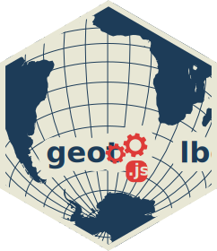

geotoolbox@3
geotoolbox is a javascript tool for geographers. It allows one to manage GeoJSON properties (attribute data) and provides several useful GIS operations for thematic cartography. The aim of geotoolbox is to offer functions designed to handle geoJSON directly, not just single features or geometries. As a result, the library is particularly user-friendly for users with little experience of javascript development. From a technical point of view, geotoolbox is largely based on geos-wasm GIS operators (a big thanks to Christoph Pahmeyer 🙏), but also on d3.geo and topojson. Geotoolbox also works well with other cartographic libraries such as geoviz and bertin.js. Note that there are other GIS libraries like turf.js, which is really great.

➡️ Installation
- CDN
<script src="https://cdn.jsdelivr.net/npm/geotoolbox@3" charset="utf-8"></script>
- npm
npm install geotoolbox@3
- Observable notebooks
geo = require("geotoolbox@3");
➡️ Usage
Most functions take the same type of argument as input - a dataset and options - like geotoolbox.myfunction(data, {options}). Please note that functions based on geos-wasm are asynchronous.
- A buffer example
const mybyffer = await geotoolbox.buffer(data, {dist: 1000});
- Data handling example (add a field in a geoJSON)
geotoolbox.derive(data, {
field: "gdppc", // the name of the new field
value: "gdp/pop*1000", // a function to calculate the value
mutate: true // to update the dataset
});
- Tests if two geometries intersect
geotoolbox.intersects(data1, data2);
➡️ Data handling
1 - To create a featureCollection from anything
togeojson()- The function allows to retrieve a geoJSON FeatureCollection from a topoJSON, an array of features, a single feature, an array of geometries, a single geometry, an array of objects with coordinates (points), an array coordinates (points) or a couple of coordinates (points).
2 - Data formatting
These functions can be applied to a geoJSON (in this case, properties are considered) or a simple data table (array of objects).
autotype()- The function detects common data types such as numbers, dates and booleans, and convert properties values to the corresponding JavaScript type.columns()- Select, rename and reorder properties.combine()- Puts several datsets into one.copy()- Deep copy.dedupe()- Deletes duplicates. Keeps the first element.derive()- The function add a field to a datasetgroupby()- The functions groups data by category. If the input data is a geoJSON, then the geometries are also merged.iterate()- Iterate and apply a function.join()- Join datasets using a common identifier.head()- The function returns the n first elements.filter()- Filter a dataset.replace()- Replace substrings in a dataset.sort()- Sort a dataset according to a field.table()- Retrieves the dataset's attribute table (properties)tail()- The function returns the n last elements.
3 - Describe
Some functions to view and describe the content of geoJSONs.
htmltable()- View a data table.info()- The function gives some informations about a geoJSON (size, number of nodes, type of features, etc)
➡️ Geometry handling
1 - geoprocessing
Main GIS functions and geoprocessing. These functions take as input a geoJSON, an array of features, a single feature, an array of geometries or a single geometry. They return an object of the same type.
aggregate()- Aggregate geometries.bbox()- Geographic bounding box.border()- Extract boundaries from polygons or multipolygons.buffer()- Create buffer areas.centroid()- Centroids of polygons or multipolygons.clip()- Clip a geometry with another.clipbyrect()- Intersection optimized for a rectangular clipping.concavehull()- Returns a "concave hull" of a geoJSON.convexhull()- Returns a "convex hull" of a geometry.densify()- Densifies a geometry using a given distance tolerance.dissolve()- The function allows to convert "MultiPoint", "MultiLineString" or "MultiPolygon" to single "Point", "LineString" or "Polygon".envelope()- Returns minimum rectangular polygon or point that contains the geometry, or an empty point for empty inputs.nodes()- Retrieve geometry nodes.simplify()- The function allows to simplify a geometry. By default, the generalization level is calculated automatically to ensure smooth map display.stitch()- The function remove antimeridian and polar cuts, and replacing straight Cartesian line segments with geodesic segments.union()- Merge geometries.
2 - Improve and clean
Some functions for improving and correcting gemetries errors.
makevalid()- The function allows to make geometries valid .removeemptygeom()- The function remove all features with undefined geometries.resolveemptygeom()- The function replace all features with undefined geometries by a valid geometry, but without coordinatesreverse()- Converts CCW rings to CW. Reverses direction of LineStrings.rewind()- Rewind a geoJSON (Fil recipe).rewind2()- Rewind a geoJSON (Mapbox recipe).roundcoordinates()- The function allows to round the coordinates of geometries.
3 - Tests
GIS operators. All these functions return a true or false boolean.
contains()- Tests if geometry g2 is completely within g1, but not wholly contained in the boundary of g1.covers()- Tests if geometry g1 covers g2, which is the case if every point of g2 lies in g1.crosses()- Tests if two geometries interiors intersect but their boundaries do not. Most useful for finding line crosses cases.disjoint()- Tests if two geometries have no point in common.coveredby()- Tests if geometry g1 is covered by g2, which is the case if every point of g1 lies in g2.equals()- Tests if two geometries contain the same set of points in the plane.intersects()- Tests if two geometries intersect.isvalid()- Tests the validity of the geometries.isvalidreason()- Tests the validity of the geometries and give teh reason.overlaps()- Tests if two geometries share interiors but are neither within nor contained.touches()- Tests if two geometries share boundaries at one or more points, but do not have interior points in common.within()- Tests if geometry g1 is completely within g2, but not wholly contained in the boundary of g2.
4 - Other
Useful functions for cartography.
geolines()- Equator, tropics & polar circles.tissot()- Generate Tissot's indicatrix.
🚧 Work in progress 🚧
- plot function
- stuff about projection. proj4. proj4d3
- function filter and remove
- fonction split ?
Other ideas? => issues